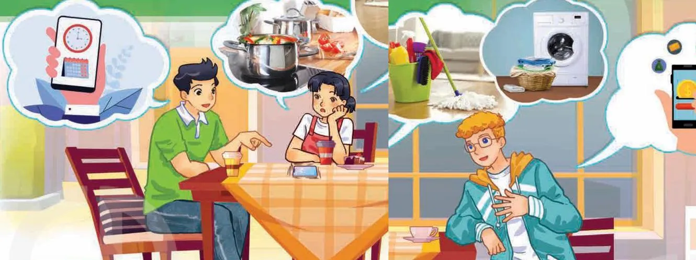

Earning your parents’ trust
Lesson 1 — Getting started
8Five stops in 45 minutes
- 🗂️
Warm-up
Independent or dependent?
5 min - 🔤
Vocabulary
5 key words
7 min - 🎧
Listen and read
Mai, Nam & Mark · Tasks 1–4
20 min - 🎭
Role-play
How to live independently
10 min - ✅
Wrap-up
Exit ticket
3 min
Warm-up
Independent or dependent?
5 minutesIndependent or dependent lifestyle?
- Cook for yourself
- Keep asking parents for money
- Have good time management
- Wait for parents to cook
- Know how to keep house
- Not do the homework
- Keep your body clean
- Need mother to drop you off at school
- Think twice before deciding
- Communicate badly with people
- Get enough good sleep
- Eat instant noodles all the time
Two lifestyles
💪 Independent
cook for yourself · have good time management
know how to keep house · keep your body clean
think twice before deciding · get enough good sleep
🙋 Dependent
keep asking parents for money · wait for parents to cook
not do the homework · need mother to drop you off at school
communicate badly with people · eat instant noodles all the time
Vocabulary
Five key words
7 minutesBecoming independent
- independent (adj) /ˌɪndɪˈpendənt/ tự lập, độc lập
- trust (n) · earn sb’s trust /trʌst/ sự tin tưởng · giành được lòng tin của ai
Becoming independent
- convince (v) /kənˈvɪns/ thuyết phục
- responsible (adj) /rɪˈspɒnsəbl/ có trách nhiệm
Becoming independent
- encourage (v) /ɪnˈkʌrɪdʒ/ khuyến khích, động viên
Listen and read
Earning your parents’ trust
20 minutesWhat can you see? What are they discussing?

They are discussing… housework, managing time and money, and how to earn their parents’ trust
Earning your parents’ trust
Nam: Mai, why don’t you answer your phone? It keeps ringing.
Mai: It’s my mum who’s calling me again. She wants me to contact her from time to time while I’m out.
Nam: My parents used to be like that. They thought I didn’t have the confidence to deal with difficult situations.
Earning your parents’ trust
Mark: I had the same experience. It was earning my parents’ trust that took a long time. But I managed to convince them that I’m responsible when I’m out and about.
Mai: It’s my parents who still think I don’t have the skills to be independent. I’m not good at managing my time or money, but I’m independent at home – I can cook, clean the house, and do my laundry!
Earning your parents’ trust
Nam: That’s a good start! I use a time-management app to plan my weekly schedule including all my activities and responsibilities. Would you like me to help you install it?
Mai: That’d be great. Thanks, Nam.
Mark: I use a money-management app. It’s the app that taught me how to be responsible with money.
Earning your parents’ trust
Mai: Mark, can you show it to me?
Mark: No problem. My parents also encourage me to take part-time jobs and pay me for doing certain chores around the house.
Mai: Lucky you!
Who has these skills?
1. Managing money Mark — “It’s the app that taught me how to be responsible with money.”
2. Cooking, cleaning, and doing laundry Mai — “I can cook, clean the house, and do my laundry!”
3. Managing time Nam — “I use a time-management app to plan my weekly schedule.”
Find the words
1. a belief in your own ability to do things well confidence
2. confident and free to do things without help from other people independent
3. things that you must do as part of your duty or job responsibilities
4. the activity of planning how to spend and save money money-management
Match 1–4 with a–d
1. It’s my mum d
2. It was earning my parents’ trust a
3. It’s my parents b
4. It’s the app c
a. that took a long time.
b. who still think I don’t have the skills to be independent.
c. that taught me how to be responsible with money.
d. who’s calling me again.
Focus on one part of the sentence
Normal sentence
My mum is calling me again.
Earning my parents’ trust took a long time.
Cleft sentence
It’s my mum who’s calling me again.
It was earning my parents’ trust that took a long time.
Role-play
How to live independently
10 minutesHow can I become more independent?
- 🙋
Student
My parents still think I can’t … How can I convince them?
- 🧑🏫
Advisor 1
You should learn to … · Why don’t you use a time-management app?
- 💰
Advisor 2
Try to save part of your pocket money · take a part-time job …
- 🤝
Everyone
That way, you can earn your parents’ trust.
Before you leave…
1. Name one skill that helps teens become independent. e.g. managing time · managing money · cooking · doing laundry
2. Complete: I will earn my parents’ trust by … Students’ own answers
3. Complete the cleft sentence: It’s my mum ___ is calling me. who
Homework
1. Write a short paragraph about how to live independently.
2. Do the Getting started exercises in the workbook.
3. Start thinking about the project in Lesson 8: a plan to develop a life skill.